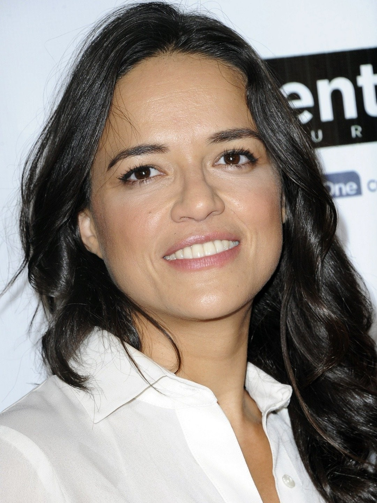

Halálos iramban
A Halálos iramban (eredeti cím: The Fast and the Furious) egy 2001-ben bemutatott amerikai akciófilm, amelyet Rob Cohen rendezett. A film az autós üldözések és az utcai versenyek világába kalauzolja el a nézőket.
Főbb Szereplők
Vin Diesel - Dominic Toretto
Paul Walker - Brian O'Conner

Michelle Rodriguez - Letty Ortiz
Jordana Brewster - Mia Toretto
Film Rövid Története
A film Brian O'Conner történetét követi, aki beépített rendőrként próbál beférkőzni az illegális utcai versenyek világába. Dominic Toretto, egy karizmatikus versenyző és csapatának vezetője, hamarosan O'Conner figyelmének középpontjába kerül. Ahogy a nyomozás halad, Brian egyre jobban belesodródik ebbe a veszélyes világba.
Érdekességek
- A film alapját egy 1998-as cikk adta, amely az illegális utcai versenyzés világáról szólt.
- Vin Diesel kaszkadőrjei között maga is elvállalt néhány veszélyes jelenetet.
- Paul Walker való életben is szenvedélyesen szerette az autókat és a versenyzést.
- A film forgatása során több mint 150 autót használtak fel, amelyek közül sokat megsemmisítettek.
- A film sikerének köszönhetően a "Halálos iramban" franchise az egyik legsikeresebb akciófilm-sorozattá vált.
- Az első film forgatása során Vin Diesel és Paul Walker között szoros barátság alakult ki, amely a valós életben is folytatódott.
- A filmben látható autós üldözések és kaszkadőr jelenetek nagy része valódi, minimális számítógépes trükkökkel.
- A film zenéje is nagy sikert aratott, és több slágerlistás dalt tartalmazott.
- A "Halálos iramban" filmekben szereplő autók közül sokat a rajongók is megvásárolhattak különböző aukciókon.
- A filmben szereplő autók közül a legikonikusabb a 1970-es Dodge Charger, amely Dominic Toretto kedvenc autója.
Film Sorozat
| Cím |
Megjelenési év |
| Halálos iramban |
2001 |
| Halálosabb iramban |
2003 |
| Halálos iram: Tokiói hajsza |
2006 |
| Halálos iramban 4. |
2009 |
| Halálos iramban: Ötödik sebesség |
2011 |
| Halálos iramban 6. |
2013 |
| Halálos iramban 7. |
2015 |
| Halálos iramban 8. |
2017 |
| Halálos iramban: Hobbs és Shaw |
2019 |
| Halálos iramban 9. |
2021 |
| Halálos iramban 10. |
2023 |
További információk
További részletekért látogass el a Wikipédia oldalára.
Elérhető Streaming Szolgáltatók